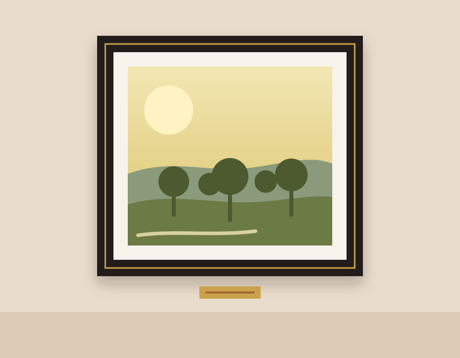
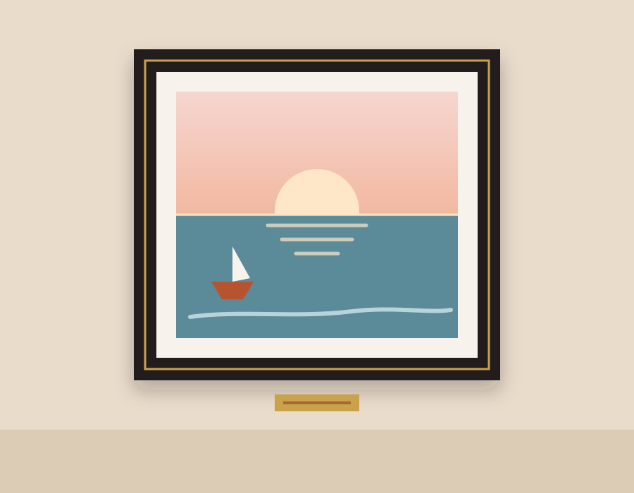

Arayüz tasarımı: Bu sayfa yalnızca tasarım amaçlıdır; girilen bilgiler sunucuya kaydedilmez.
Yeni eser ekle
düzenleniyor.
Eser listesi
| Görsel | Eser | Kategori | Fiyat | Durum | İşlemler |
|---|---|---|---|---|---|
 | Narenci Işığı Elif Demirtaş, 2025 | Resim | 18.500 ₺ | Satışta | |
 | Mavi Saat Mert Aksoy, 2024 | Resim | 14.200 ₺ | Satışta | |
 | Zeytin Bahçesi Zeynep Kaya, 2025 | Resim | 21.000 ₺ | Satışta | |
 | Kıyıda Sabah Elif Demirtaş, 2026 | Resim | 9.800 ₺ | Satışta | |
 | Nar Vazo Selin Yurt, 2026 | Seramik | 4.800 ₺ | Satışta | |
 | Kulplu Çömlek Ayşe Tunç, 2025 | Seramik | 3.600 ₺ | Satışta | |
 | Çini Desenli Tabak Selin Yurt, 2025 | Seramik | 5.400 ₺ | Satışta | |
 | Mat Sürahi Ayşe Tunç, 2026 | Seramik | 4.100 ₺ | Satışta | |
 | Anka Can Erdem, 2025 | Heykel | 32.000 ₺ | Satışta | |
 | Denge Burak Çınar, 2025 | Heykel | 19.500 ₺ | Satışta | |
 | Dalga Derya Soylu, 2026 | Heykel | 27.500 ₺ | Satışta | |
 | Sarmal Can Erdem, 2024 | Heykel | 16.800 ₺ | Satışta |
Eşleşen eser yok.